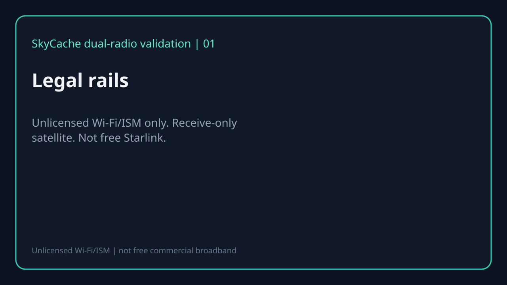
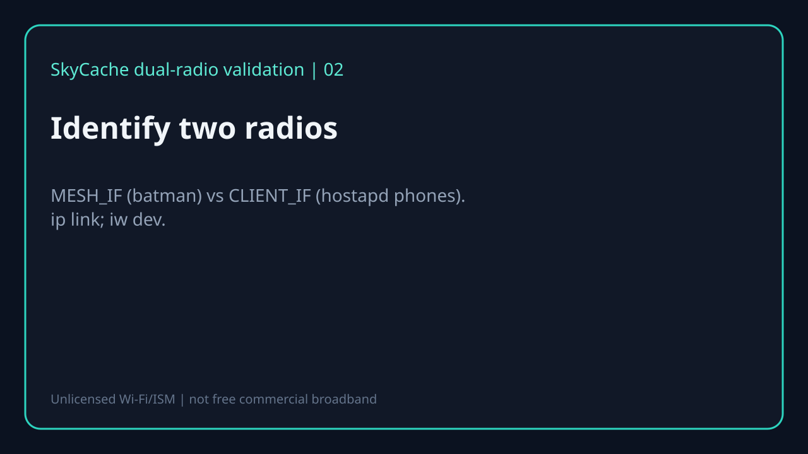
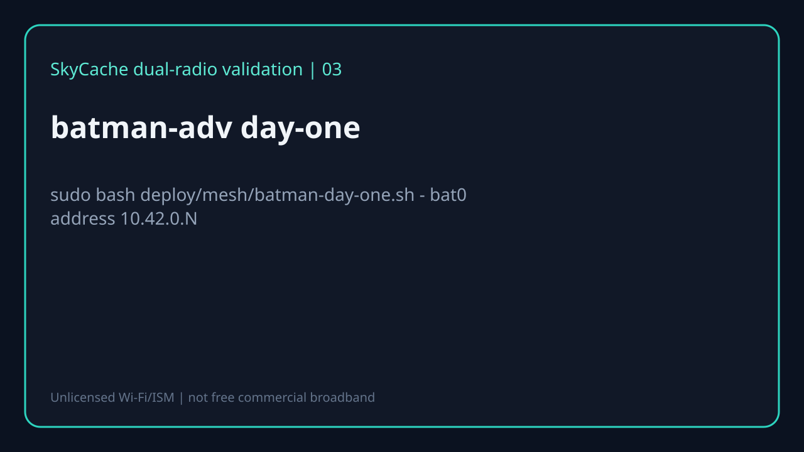
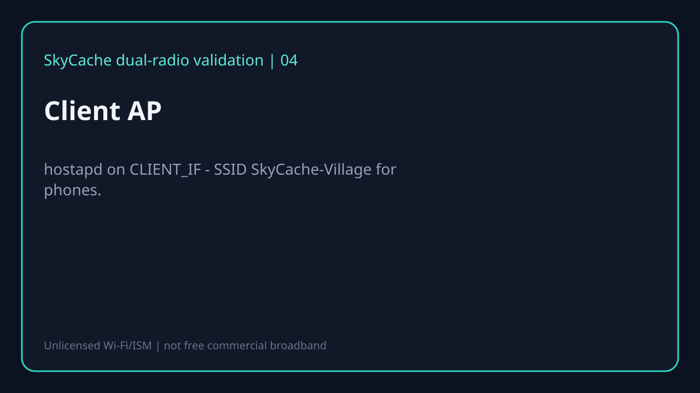
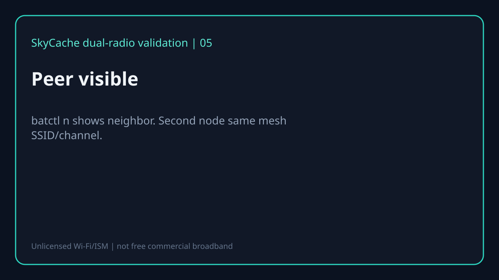
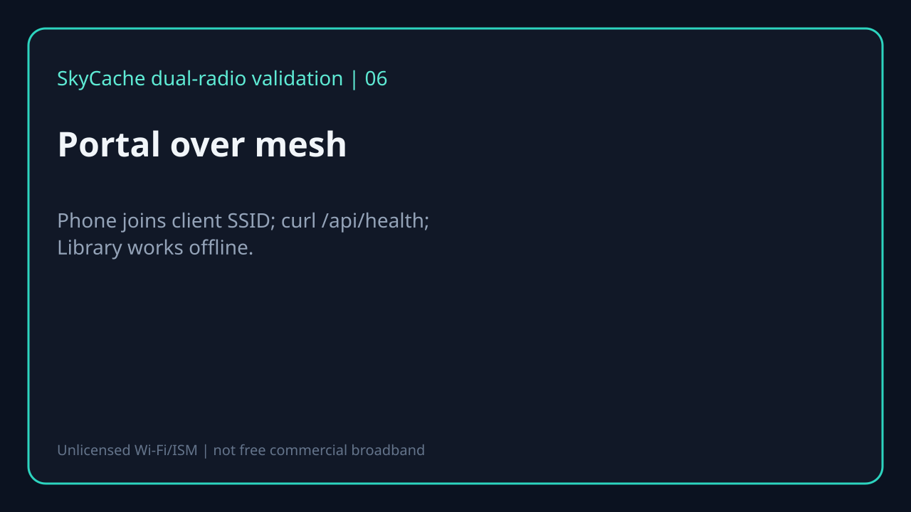
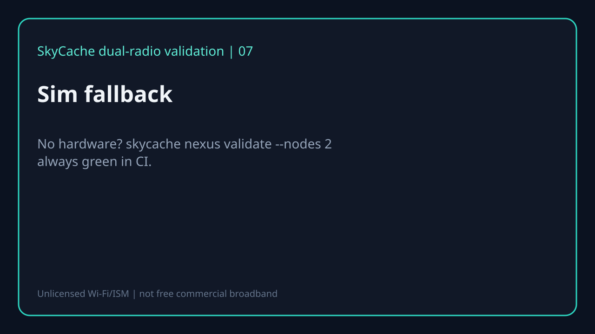

Shared day-one proof for village mesh. Sim path always available. Optional FFmpeg slideshow: render-slideshow.sh.
| Board | Status | Mesh radio | Client radio | Notes |
|---|---|---|---|---|
| Raspberry Pi 4 (2 - 4 GB) | primary_supported | USB Wi-Fi adapter (ath9k_htc / mt76 recommended) | onboard wlan0 or second USB | Most common village BOM; dual USB radio for batman + hostapd |
| Raspberry Pi 5 | primary_supported | USB Wi-Fi (PCIe HAT optional later) | onboard or USB | Same day-one script; watch 5 V power budget with dual radios |
| Raspberry Pi 3B+ | supported_limited | USB Wi-Fi (onboard often weak for mesh) | onboard wlan0 | 1 GB RAM OK for portal; keep pack profiles small |
| Orange Pi 5 / similar RK3588 | community | USB Wi-Fi | onboard if present | Debian/Ubuntu images vary; verify batctl/kernel module |
| OpenWrt dual AP + Pi Ethernet | recommended_field | OpenWrt batman-adv on APs | AP SSID for phones | Preferred field topology: Pi on Ethernet, mesh on APs |
| Laptop / CI sim (no RF) | always_green | sim | n/a | skycache nexus validate --nodes 2|3 - zero hardware |
Unlicensed Wi-Fi/ISM only. Receive-only satellite. Not free Starlink.

MESH_IF (batman) vs CLIENT_IF (hostapd phones). ip link; iw dev.

sudo bash deploy/mesh/batman-day-one.sh - bat0 address 10.42.0.N

hostapd on CLIENT_IF - SSID SkyCache-Village for phones.

batctl n shows neighbor. Second node same mesh SSID/channel.

Phone joins client SSID; curl /api/health; Library works offline.

No hardware? skycache nexus validate --nodes 2 always green in CI.
